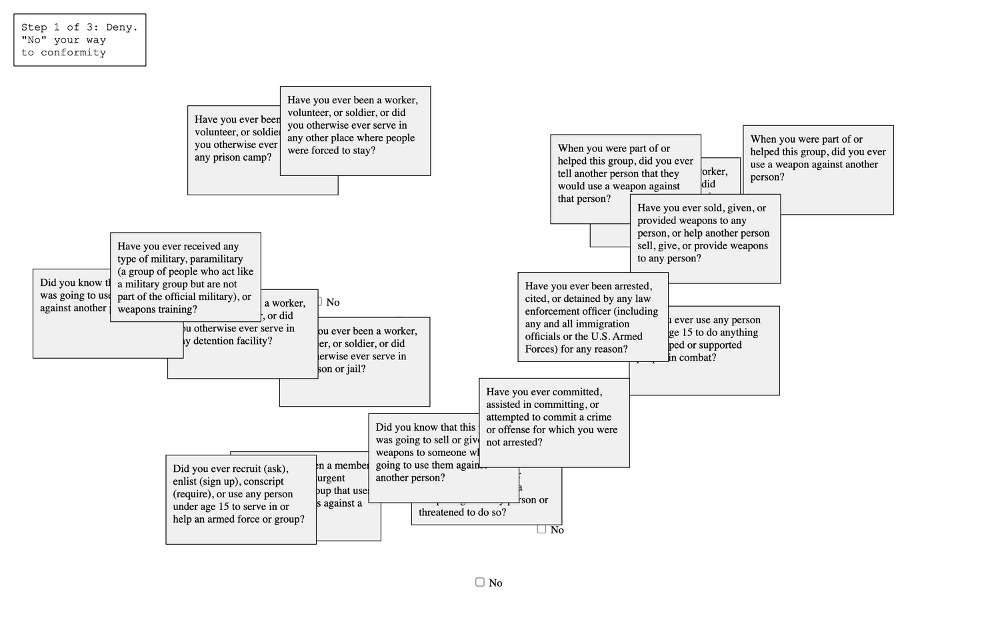
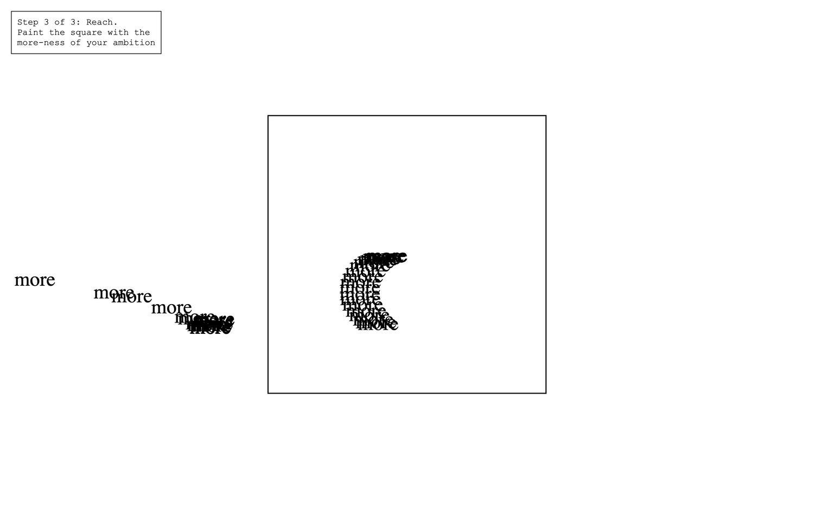
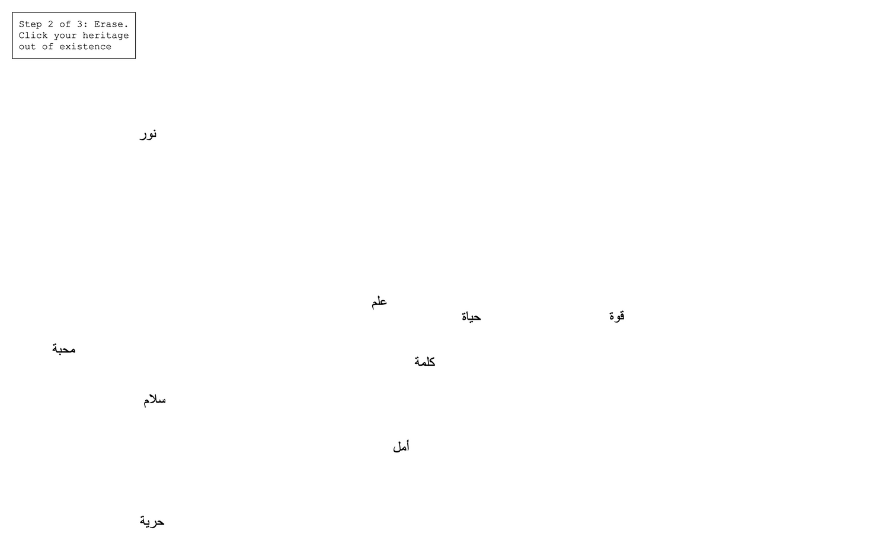
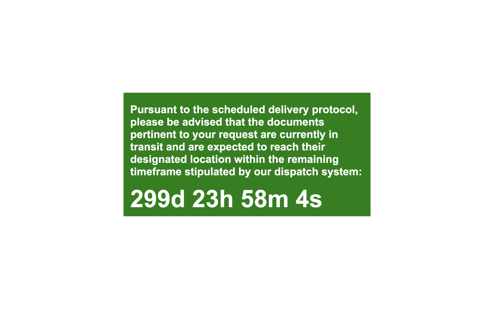
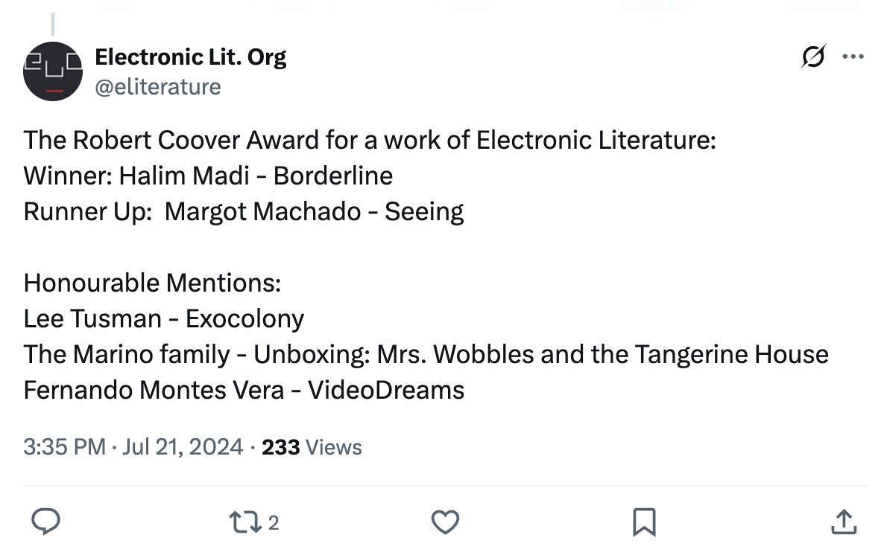
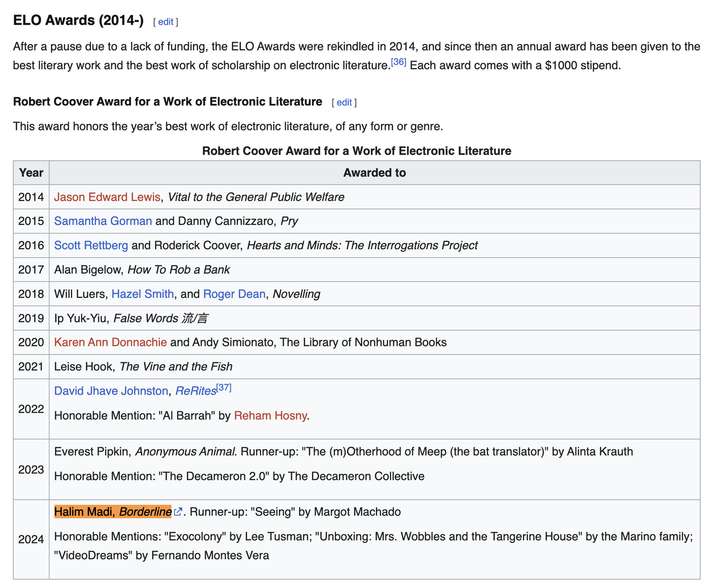

Borderline.exe

Borderline.exe opens with a question: “Are you carrying weapons?” Your only way forward is to chase “No.” You are declared admissible, but not welcome. The green screen that signals success burns a hole in your chest.
This web-based piece distills the experience of crossing borders into its most distilled, digital form. A faceless interface issues invasive, accusatory prompts. As you attempt to respond, checkboxes evade your cursor, prolonging the process. Each interaction mimics the psychological toll of being scrutinized, diminished, and made to wait.

The final screen delivers a quiet violence: 299 days. That’s how long it will take for your documents to arrive. A green background, used elsewhere to signal progress, now becomes a cruel parody of success.




Winner of the 2024 Robert Coover Award for Electronic Literature, Borderline.exe was praised for its formal clarity and emotional restraint. As the judges noted: “Each interactive element is perfectly deployed in service of its subject matter - distilling the complex and intersecting mechanics of capitalism, bureaucracy, and border control into their purest forms.”

Borderline.exe doesn’t tell you what to feel. It makes you feel it. Built with deceptively simple code, it forces you to navigate absurdity, humiliation, and delay - without spectacle, without reprieve. The border is not explained. It is enacted. In an era of biometric scans and algorithmic suspicion, Borderline.exe is a digital elegy. It is not a metaphor. It is a system. One you must survive. “A poem you must obey before it lets you read.”